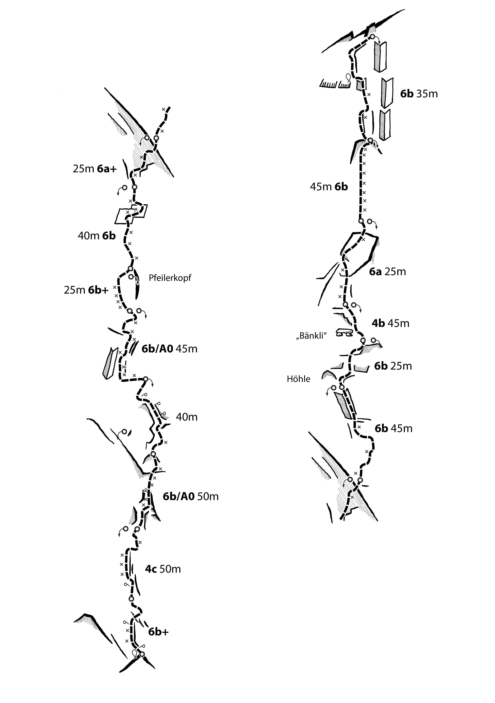

Blechharmonie
Schwierigkeit
6b+
Länge
ca. 500 m
Exposition
SW
Beschreibung
Blechharmonie ist eine sehr lange und anspruchsvolle Tour am Jägihorn. Die Route wurde vom Autor nicht begangen, weshalb einige Angaben fehlen. Blechharmonie wird demnächst saniert.
Zustieg
Von der Baltschiederklause in etwa 20 bis 30 Minuten zum Einstieg.
Abstieg
Abseilen über die Route oder weiter bis zum Gipfel aufsteigen und über das Quarzband absteigen.
Topo

Absicherung
Alpin
Seil
2 × 50 m
Express
10x
Friends
2x 0.3 – 3
Keile
1 Satz